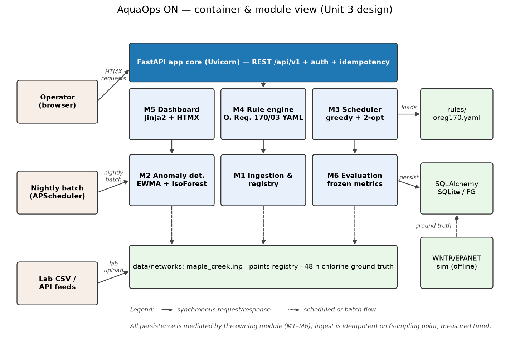
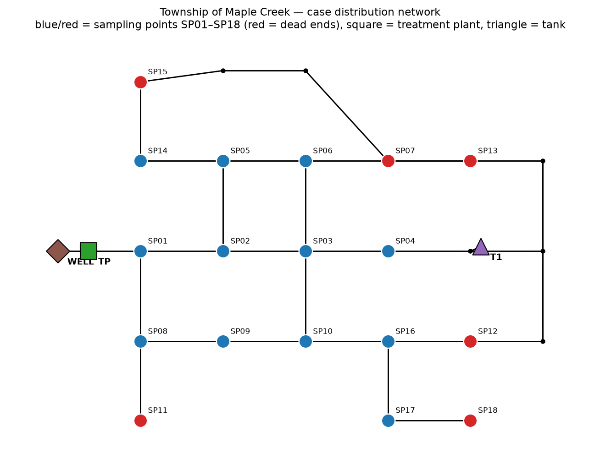
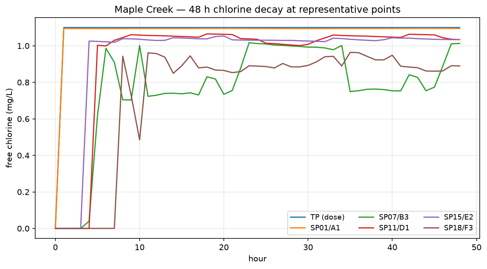

Measured results
Seven success criteria were frozen at proposal stage and evaluated on the integrated, deployed system. All six measurable criteria passed on the simulated case network; the usability criterion was partly met. An independent benchmark on real utility data then showed that the detection result does not transfer (see below).
Independent benchmark: an honest negative result
The F1 above was measured on a decay episode injected into the simulated network. Replayed unmodified on the externally labelled GECCO 2018 utility data set (139,566 real readings, 51 organiser-labelled events), the detector raised 87–147 false-alarm episodes a week against a budget of two, hit no more events than chance, and scored below a simple rolling three-sigma rule. The cause is three calibration choices — a watch level tied to Ontario's provincial mean, a per-window Isolation Forest percentile cut, and a noise estimate with no floor for quantized sensors — now the first item of future work.
Deliverables
Working prototype & code
End-to-end pipeline — laboratory CSV import → anomaly alerts → regulation-derived duties → routed weekly plan → operator dashboard — delivered as a single Docker image with a verified field deployment behind TLS and operator token authentication.
Design documents
Architecture, data model (13 entities), and a versioned REST API specification —
19 paths in six groups under /api/v1 with RFC 9457 problem+json errors.
Deployment & operations
Containerized deployment with a written configuration record a third party can reproduce, plus a maintenance plan with regression, backup, and rule-amendment procedures. Operators sign in with per-operator tokens (bearer for the API, a signed session cookie for the dashboard).
Engineering evidence
Real commit history across feature branches and pull requests, GitHub Actions CI runs, coverage reports, evaluation harness output, and a five-participant usability study.
Final presentation video
A 13-minute recorded presentation and live demonstration: architecture, measured results, and the full operator workflow from laboratory upload to a confirmed route sheet.
System at a glance
Small Ontario water systems are run by one or two certified operators who carry personal liability for missed sampling and late adverse-result reporting. AquaOps ON encodes the regulation as versioned, section-traceable data (YAML rules verified against O. Reg. 170/03), detects chlorine decay with an explainable EWMA + Isolation Forest detector, and schedules duties around regulatory windows with a greedy + 2-opt route planner. Every compliance record lives in an append-only audit trail.



Technology stack
About the author
Built by oama1111 as the capstone project for the Master of Science in Information Technology at University of the People. The author is an Ontario DZ licence holder preparing for OWWCO Operator-in-Training certification, and designed the platform around the daily reality of small-system operators.
- GitHub: github.com/oama1111
- Project board: github.com/users/oama1111/projects/1